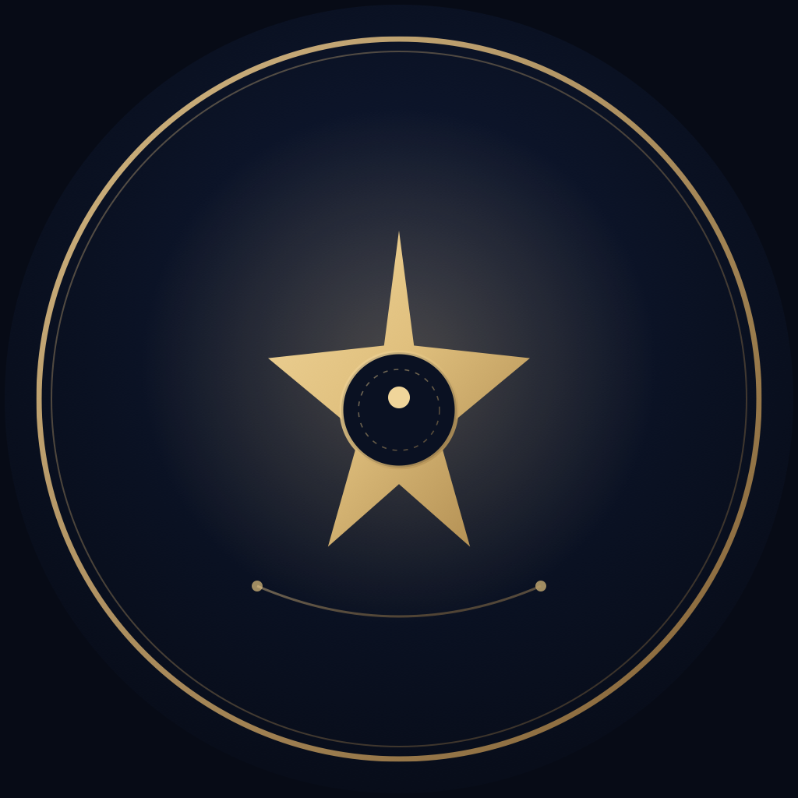

观己实验室 · 小红书主页设计
头像 / 背景横幅 / 简介 / 内容排布 预览
‹
观己实验室
⋯ ⊙

观己实验室
小红书号：guanjilab（可自定义）
编辑资料
理解自己，设计人生。
不卖答案，只做镜子。 向内观看，再慢慢成为自己。🔍 搜索「观己实验室」。
✳ 心理成长 · 自我探索 · 人生设计
🏷 成长分享者 · 观己来信
23
关注
86
粉丝
412
获赞与收藏
关注
私信
✦
笔记
12
收藏
赞过
置顶
迷茫不是故障
是你在换系统
自我探索 · 六面镜子
迷茫不是故障，是你在换系统
♡ 128
置顶
我不是在找自己
而是在做自己
关于观己的一封信
我不是在找自己，而是在做自己
♡ 96
测了那么多「我是谁」
没人告诉我下一步
反标签 · 成长
测了那么多「我是谁」…
♡ 74
写给你的一封信
你不需要被定义
观己来信
写给你的一封信
♡ 63
主页文案与设置
昵称
观己实验室
小红书号
guanjilab（若已被占用，可用 guanji_lab / selfinsightlab）
简介（可直接复制）
理解自己，设计人生。不卖答案，只做镜子。
向内观看，再慢慢成为自己。
🔍 搜索「观己实验室」
✳ 心理成长 · 自我探索 · 人生设计
置顶笔记建议
① 品牌长文《我不是在找自己，而是在做自己》
② 测试体验《迷茫不是故障，是你在换系统》
③ 反标签观点《测了那么多「我是谁」，没人告诉我下一步》
设计文件
头像（正方形，上传后系统裁圆）：xhs-avatar.svg / xhs-avatar.png
主页背景横幅：xhs-banner.svg / xhs-banner.png
预览页：xhs-home-preview.html